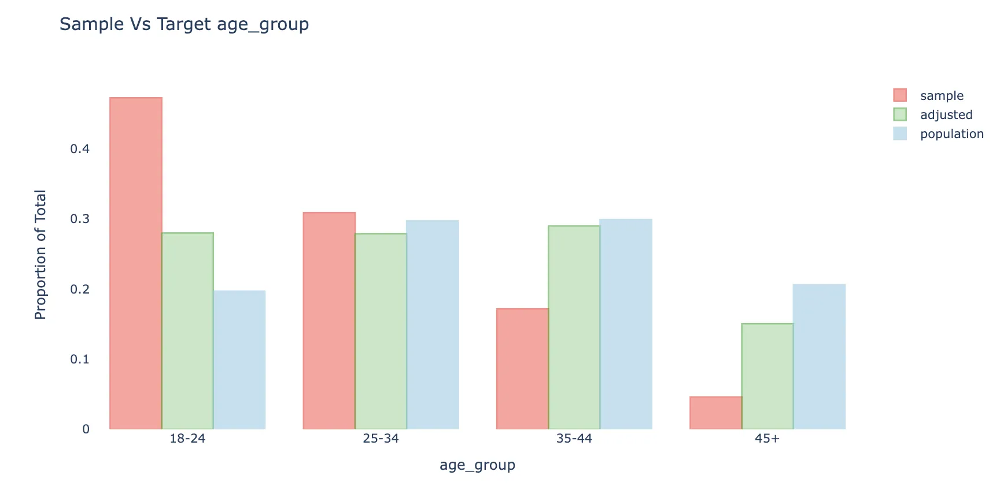
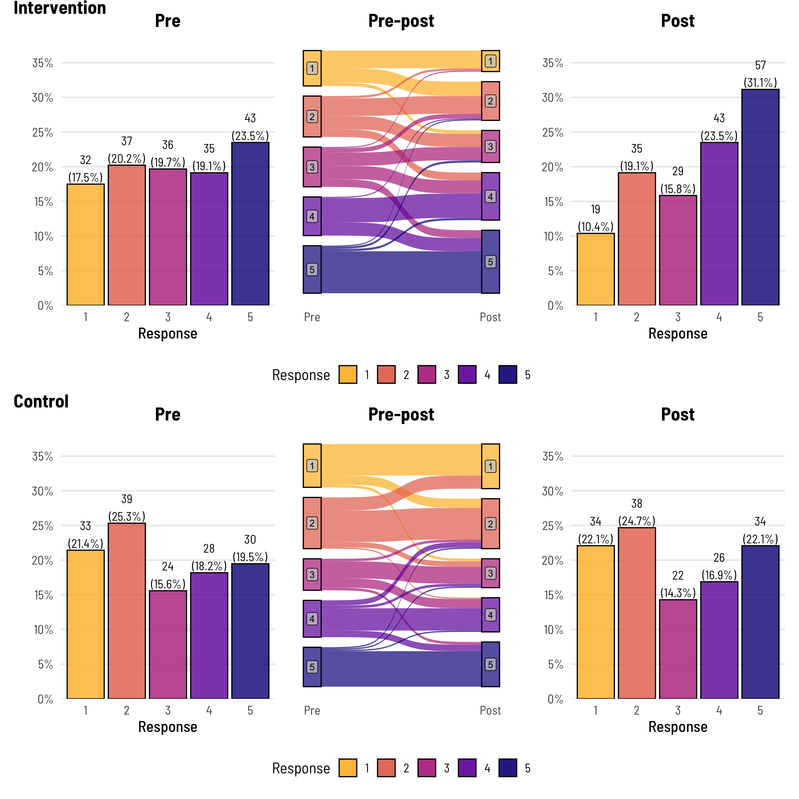
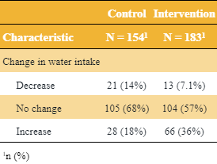
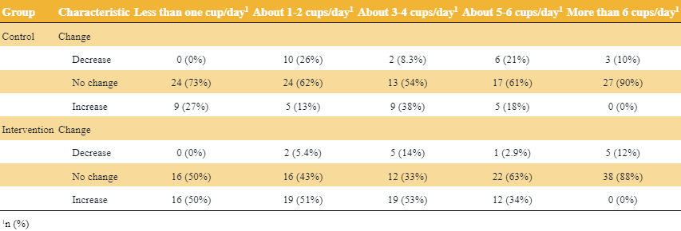

Analysis
Misc
- {aberrance} - Detect several types of aberrant behavior, including answer copying, answer similarity, nonparametric misfit, parametric misfit, preknowledge, rapid guessing, and test tampering.
- {bayesQRsurvey} - Bayesian Quantile Regression Models for Complex Survey Data Analysis
- All algorithms are implemented in C++
- {bbw} - The blocked weighted bootstrap is an estimation technique for use with data from two-stage cluster sampled surveys in which either prior weighting or posterior weighting is implemented
- {careless} - Procedures for Computing Indices of Careless Responding
- Supports the calculation of longstring, even-odd consistency, psychometric synonyms/antonyms, Mahalanobis distance, and intra-individual response variability (also termed inter-item standard deviation)
- {csSampling} (Vignette) - Provides estimation of Bayesian models for data collected from complex survey samples by combining functionality from Stan (via rstan and brms) and the survey package.
- Estimates the weighted stan model and provides an asymptotic covariance correction for model mis-specification due to using survey sampling weights as plug in values in the likelihood (i.e. design effect).
- {dropout} (JOSS) - Classifies missing values based on the occurrence of single missing values, section dropouts and complete dropouts which allows it to produce summary statistics of different response patterns and relate them to the overall occurrence of missing values.
- {fastsurvey} (article): Making the {survey} hundreds of times faster using {Rcpp}
- {FHDI} (Vignette) - Functions for fractional hot deck imputation as well as fully efficient fractional imputation for handling item nonresponse under a missing at random (MAR) assumption
- {HeckmanStan} - Heckman Selection Models Based on Bayesian Analysis
- Used to correct for sample selection bias, which occurs when the sample used in an analysis does not accurately represent the entire population.
- It involves a two-step estimation process: first, modeling the probability of selection into the sample, and second, modeling the outcome of interest while accounting for this selection bias.
- {HRTnomaly} - Historical, Relational, and Tail Anomaly-Detection Algorithms
- {jtools} - Convenience functions for the survey package’s svyglm objects as well as weighted regressions
- {memisc} - Tools for Managing Survey Data and Creating Tables of Estimates and Data Summaries
- {NMAR} - Methods to estimate finite-population parameters under nonresponse that is not missing at random (NMAR, nonignorable).
- Incorporates auxiliary information and user-specified response models, and supports independent samples and complex survey designs via objects from the ‘survey’ package
- Current Methods: Empirical Likelihood and Exponential Tilting (more to come)
- {PanelSelect} - Extends the Heckman selection framework to panel data with individual random effects.
- Also see {HeckmanStan}
- The first stage models participation via a panel Probit specification, while the second stage can take a panel linear, Probit, Poisson, or Poisson log-normal form.
- {RMCLab} - Lab for Matrix Completion (recommenders) and Imputation of Discrete Rating Data (e.g. surveys)
- Matrix completion (recommenders) and imputation (statistics) are synonymous terms
- {srvyr} - Brings parts of dplyr’s syntax to survey analysis, using the survey package.
- Only for descriptive analysis, so more advanced analysis requires other packages
- {survey} - Lumley’s OG package
- {surveySimR} - Estimation of Population Total under Complex Sampling Design
- Draws multiple SRSWOR (SRS w/o replacement) samples from a finite population and estimates the population parameter i.e. total of HT, Ratio, and Regression estimators.
- Repeated simulations (e.g., 500 times) are used to assess and compare estimators using metrics such as percent relative bias (%RB), percent relative root means square error (%RRMSE).
- {svycoxme} - Mixed-effect proportional hazards models for multistage stratified, cluster-sampled, unequally weighted survey samples
- {svylme} (Paper) - Mixed models for complex surveys
- {svyROC} - Estimation of the ROC Curve and the AUC for Complex Survey Data
- {svyvgam} - Inference based on the survey package for the wide range of parametric models in the ‘VGAM’ package
- {svytest} - Provides diagnostic tests for assessing the informativeness of survey weights in regression models.
- {SwPcIndex} - Facilitates the development of a principal component analysis-based composite index by incorporating survey weights for each sample observation.
- Provides a normalized principal component-based composite index and ranks the sample observations based on the values of the composite indices.
- Resources
- Exploring Complex Survey Data Analysis in R - {srvyr} descriptive analysis and {survey} modeling
- Has examples that model data from ANES Pre/Post Election Survey There’s also a Velasquez post about accessing and analyzing this data
- Introduction to Regression Methods for Public Health Using R: Chapter 8 Analyzing Complex Survey Data
- Survey Data Analysis with R - UCLA article that gives a nice overview of the {survey}
- Statistics in Survey Sampling
- Exploring Complex Survey Data Analysis in R - {srvyr} descriptive analysis and {survey} modeling
- Papers
- Imputation of Nonignorable Missing Data in Surveys Using Auxiliary Margins Via Hot Deck and Sequential Imputation
- Accounting for Nonresponse in Election Polls: Total Margin of Error
- Multiple Imputation for Nonresponse in Complex Surveys Using Design Weights and Auxiliary Margins
- A multivariate spatial model for ordinal survey-based data ({nimble} Code)
- Stratified Bootstrap Test Package
- Provides a nonparametric, resampling-based framework for assessing the stability of group-specific ranking patterns in multivariate survey or rating data.
- Questionnaire data can be modelled using ordinal regression (Liddell & Kruschke, 2018)
- When there are cluster-level variables, using a cross-validation split that ignores clustering tended to choose a lasso regularisation parameter that was smaller than ideal, resulting in overfitting of the model. (Lumley)
- Pairwise Likelihood (original, mathy paper, factor analysis w/ordinal data paper, usage on customer survey data ($) paper)
- A special case of composite likelihood methods that uses lower-order conditional or marginal log-likelihoods instead of the full log-likelihood
- When the number of items is greater than five (p > 5), Full Information Likelihood (FIML) is only feasible when the Item Response Theory (IRT) framework is used. However, even in IRT, FIML becomes very computationally heavy as the number of factors increases. Using Pairwise likelihood is a suitable alternative
- Ignoring the survey design features (such as stratification, clustering and unequal selection probabilities) can lead to erroneous inferences on model parameters because of sample selection bias caused by informative sampling.
- It is tempting to expand the models by including among the auxiliary variables all the design variables that define the selection process at the various levels and then ignore the design and apply standard methods to the expanded model. The main difficulties with this approach are the following:
- Not all design variables may be known or accessible to the analyst
- Too many design variables can lead to difficulties in making inference from the expanded model
- The expanded model may no longer be of scientific interest to the analyst
- Design-based approach can provide asymptotically valid repeated sampling inferences without changing the analyst’s model.
- Resampling methods, such as the jackknife and the bootstrap for survey data, can provide valid variance estimators and associated inferences on the census parameters
- In other cases, it is necessary to estimate the model variance of the census parameters from the sample. The estimator of the total variance is then given by the sum of this estimator and the re-sampling variance estimator.
- Example: In an education study of students, schools (first stage sampling units) may be selected with probabilities proportional to school size and students (second stage units) within selected schools by stratified random sampling.
- See Surveys, Sampling Methods >> Probabilistic Sampling Methods >> Multi-Stage Sampling
- Again, ignoring the survey design and using traditional methods for multi-level models can lead to erroneous inferences in the presence of sample selection bias
- In the design-based approach, estimation of variance component parameters of the model is more difficult than that of regression parameters.
- Asymptotically valid even when the sample sizes within sampled clusters (level 1 units) are small, unlike some of the existing methods, but knowledge of the joint inclusion probabilities within sampled clusters is required.
- Large variations in cluster sizes may cause an issue, see Lumley
- A special case of composite likelihood methods that uses lower-order conditional or marginal log-likelihoods instead of the full log-likelihood
- Example of debiasing a dataset by other means than by weighting by population
- The economist created a death-by-covid risk probability model. They had a bunch of medical records with patient comorbidities, age, gender, positive test, hospitalized, death/no death, etc. (people with other illnesses already) and were worried that the people who tested positive but just stayed at home (i.e. no medical records like younger people). Not correcting for this bias of undetected cases would bias their risk probabilities.
- Failing to correct this bias would lead to underestimating the risks associated with comorbidities, and to overestimating the risks among those without listed conditions.
- They used an estimated metric, national cfr per age group per gender per week (separate dataset from CDC which has stats on groups with and without medical records). When a week’s sample cfr didn’t match that week’s national cfr, they would randomly sample people in the dataset who didn’t meet the selection criteria (i.e. positive covid test) and assign them a positive test. They continued to add these reclassified people to that week’s sample until the sample cfr matched the national cfr. Thus, debiasing they’re data set.
- Thought this was an interesting case because it used a estimated metric to “weight” subgroups within their sample to make it more representative of the “true” population.
- Also see Projects >> Rolling COVID-19 CFR
- https://www.economist.com/graphic-detail/2021/03/11/how-we-built-our-covid-19-risk-estimator
- The economist created a death-by-covid risk probability model. They had a bunch of medical records with patient comorbidities, age, gender, positive test, hospitalized, death/no death, etc. (people with other illnesses already) and were worried that the people who tested positive but just stayed at home (i.e. no medical records like younger people). Not correcting for this bias of undetected cases would bias their risk probabilities.
- Calibrataion
- Notes from Survey Statistics: 5 flavors of calibration
- Types
- Poststratification: Calibrate our estimates of means \(\mathbb{E}(Y)\) to population data about another variable \(X\). Also called “MRP”.
- Intercept Correction: Calibrate our estimates of regressions \(\mathbb{E}(Y|X)\) to aggregate data about E(Y). So \(\mathbb{E}(Y) = \mathbb{E}(\hat Y)\), where \(\hat Y\) is our estimate of \(\mathbb{E}(Y|X)\).
- Conditional Mean Calibration: \(\mathbb{E}(Y | \hat Y) = \hat Y\), where \(Y\) is out-of-sample from the data used to get \(\hat Y\).
- Also called “conditional coverage”, or “perfect calibration”, or “Bayesian Calibration” (p.128 of BDA3), or just “calibration” in Hardt et al. p.30 and in Jessica’s posts.
- How is this checked? Jessica mentions binning \(\hat Y\) and calculating Expected Calibration Error (ECE).
- Distribution Calibration: \(Y | X ~ \hat p(y | X)\) where \(\hat p\) is the posterior predictive distribution to estimate \(p(y | X)\).
- See the workflow article (and Gabry et al. 2019), which discusses checking that \(\hat F(Y)\) is uniform, where \(\hat F\) is our estimate of the cumulative distribution function \(F\)
- If we have distribution calibration, intervals (e.g. 90% uncertainty intervals) based on the posterior predictive distribution will have correct coverage. Also, we’d have the correct means \(\hat Y = \mathbb{E}(Y | X)\), so we’d have conditional mean calibration. In other words, distribution calibration is a super strong wish
- Simulation-based calibration (SBC): a way to validate Bayesian computation of the posterior. See the workflow article.
Terms
- Ceiling and Floor Effects - An artificial lower limit on the value that a variable can attain, causing the distribution of scores to be skewed.
- Occur when the tests or scales are relatively easy or difficult such that substantial proportions of individuals obtain either maximum or minimum scores and that the true extent of their abilities cannot be determined.
- Sounds kind of like censoring (See Regression, Other >> Censored and Truncated Data)
- Ceiling or floor effects alone would induce, respectively, attenuation or inflation in mean estimates. And both ceiling and floor effects would result in attenuation in variance estimates.
- {DACF}
- Recovers mean and variance given data with ceiling/floor effects
- Allows for mean comparison tests such as t-test and ANOVA for data with ceiling/floor effects
- Example: The distribution of scores on an ability test will be skewed by a floor effect if the test is much too difficult for many of the respondents and many of them obtain zero scores.
- Example: The distribution of scores on an ability test will be skewed by a ceiling effect if the test is much too easy for many of the respondents and many of them obtain perfect scores
- Design Effect (DEff) - A measure of the expected impact of a sampling design on the variance of an estimator for some parameter of a population. (wiki)
- It is calculated as the ratio of the variance of an estimator based on a sample from an (often) complex sampling design, to the variance of an alternative estimator based on a simple random sample (SRS) of the same number of elements.
- Design Effect = 1: Says the variance of your estimator (and hence its standard error) is the same in your complex survey design as if you’d just sampled simply from the population at random.
- Design Effect > 1: These are the norm, and says that you have a higher variance in your estimate as a price of something else in your complex design
- Example: You are sampling clusters that live closer together to make it easier for interviewers to interview several households at once, which reduces cost but increases variance.
- STATA vs {survey}: Default results for this effect will differ when the stratification variable you are splicing your sample up into for estimation purposes (i.e. mean per province) happens to be the very variable that you used as a basis for over- and under-sampling in the first place. (see article for details)
- Design Effect isn’t typically scrutinized over at the stratified variable level. It’s used at the overall survey-level (i.e. overall mean estimate and not mean estimate per province), so this typically isn’t an issue).
- The STATA Design Effect per strata method has an intuitive interpretation that could be interesting though, so see the article for details on calculating it manually in R.
Weights
Misc
- Surveys responses are often biased due to coverage error, sampling error and non-response bias. Weighting is often an important step when analyzing survey data. For each unit in the sample (e.g. respondent to a survey), we attach a weight that can be understood as the approximate number of people from the target population that this respondent represents. Weights adjust the sample distribution more towards the population distribution
- The green bars show the sample with weights applied.
- The weighted average will also be less biased to the extent the response is correlated with respondent’s age.
- The weighted distribution is not fully corrected, mainly because of bias-variance considerations
- Packages
- {{balance}} - see section below
- {CBPS} - Covariate Balancing Propensity Scores (CBPS)
- Also see
- Types >> Covariate Balancing Propensity Scores (CBPS)
- {{balance}} >> Steps >> Calculate Weights >> Methods
- Also see
- {kbal} - Provides a weighting approach that employs kernels to make one group have a similar distribution to another group given covariates.
- Papers
{kind=link}
Types
- Frequency Weights
- Steps
- Remove the duplicate observations
- Duplicates don’t add any additional information
- Weight each observation by the square root of number of times it appeared in the original dataset
\[ \sqrt{w_i} \cdot x_i \] - SSE needs to be divided by n - k + 1
- Where n is the number of observations in the original dataset and k is the number of predictors in the regression
- Remove the duplicate observations
- Steps
- Replicate Weights
- Also see Surveys, Census Data >> American Community Survey (ACS) >> PUMS >> Example 3: Calculating MOE from replicate weights
- Packages
- {srvyr::as_survey_rep} allows you to specify a survey object with replicate weights
- {svrep} (Tutorial) - Extends {survey} and {srvyr} approaches
- Supports general two-phase sampling, systematic sampling, fine stratification, unequal-probability sampling without replacement (PPSWOR), and the use of newer sampling techniques such as the cube method
- Replicate weights are a class of resampling approaches for variance estimation
- Often, researchers choose to use replicate weights to avoid publishing design variables (strata or clustering variables) as a measure to reduce the risk of disclosure.
- For surveys that don’t have built-in replicate weights {survey} has algorithms to construct them.
- Also
srvyr::as_survey_rep
- Also
- Replicate weights are designed by setting the weights of observations in some clusters to nearly zero and other clusters to nearly their sampling weights.
- Types
- Balanced Repeated Replication (BRR)
- See Ch. 10.4.1 of the {srvyr} book for a tutorial
- Half the units from each stratum are sampled. Then the target statistic is calculated on this half sample (aka the replicate).
- The procedure is repeated a certain number of times.
- Ideally you would compute statistics for every combination of units per stratum, but this could be infeasible. So they use something called a Hadamard matrix.
- The sampling variance is: \((a_i - a)^2\)
- \(a\): The statistic calculated from the complete sample
- \(a_i\): The statistic calculated from the \(i\)th replicate
- Fay’s BRR
- See Ch. 10.4.2 of the {srvyr} book for a tutorial
- Essentially a weighted BRR
- The replicate samples (i.e. half samples) are given a weight of \(2-k\)
- The samples not chosen are given a weight of \(k\)
- For regular BRR, this equates to \(k = 0\)
- Calculate statistics same as before except you’re using the whole sample for each replicate albeit weighted.
- The sampling variance is:
\[ \frac{(a_i - a)^2}{(1-k)^2} \]
- Jackknife
See Ch. 10.4.3 of the {srvyr} book for a tutorial
One cluster will have zero weight and the others will have weight close to their sampling weight;
Example: Residential Energy Consumption Survey (RECS) (Feb 2025 R-Ladies Amsterdam)
data(recs_2020, package = "srvyrexploR") recs <- recs_2020 |> srvyr::as_survey_rep( weights = NWEIGHT, repweights = NWEIGHT1:NWEIGHT60, type = "JK1", scale = 59 / 60, mse = TRUE )- NWEIGHT is the main analytical weight variable
- All the settings are from the survey’s documentation
- Also see {srvyr} >> Example 2
- Bootstrap
- See Ch. 10.4.4 of the {srvyr} book for a tutorial
- About 37% of clusters will have zero weight and 63% will have weight close to 1 or 2 or some other small multiple of their sampling weight.
- Balanced Repeated Replication (BRR)
- Importance Weights - focus on how much each row of the data set should influence model estimation. These can be based on data or arbitrarily set to achieve some goal.
- Analytic Weights - If a data point has an associated precision, analytic weighting helps a model focus on the data points with less uncertainty (such as in meta-analysis).
- (Inverse) Probability Weights (wiki) - {{balance}} refers to this type as “inverse propensity weights”
- Also see below, {{balance}} >> Steps >> Adjust >> Options
- “Directly inverting propensity score estimates can lead to instability, bias, and excessive variability due to large inverse weights, especially when treatment overlap is limited” (See paper details and solution)
- Used to reduce bias when respondents have different probabilities of selection
- Adjusts a non-random sample to represent a population by weighting the sample units. It assumes two samples:
- A sample of respondents to a survey (or in a more general framework, a biased panel).
- A sample of a target population, often referred to as “reference sample” or “reference survey.”
- This sample includes a larger coverage of the population or a better sampling properties in a way that represents the population better.
- It often includes only a limited number of covariates and doesn’t include the outcome variables (the survey responses).
- In different cases it can be the whole target apopulation (in case it is available), a census data (based on a survey) or an existing survey.
- Propensity Score - The probability to be included in the sample (the respondents group) conditioned on the characteristics of the unit
- Let \(p_i = \text{Pr}\{i \in S \| x_i\} \quad \mbox{with}\; i = 1 \ldots n\).
- \(i\) is the unit (aka respondent), \(n\) is the total number of respondents, \(S\) is the sample of respondents
- \(X\) is a set of covariates that are available for the sample and the target population
- \(p_i\) is the estimated probability of being in the sample using logistic regression
- Data includes both sample and target population
- Outcome is a binary variable (1/0): 1 = Sample, 0 = Target
- Covariates are \(X\)
- Also see Econometrics, Propensity Score Analysis
- Calculate Weights
\[ w_i = \frac{1-p_i}{p_i}d_i \]- \(d_i\) is …?
- Covariate Balancing Propensity Scores (CBPS)
- When estimating propensity score, there is often a process of adjusting the model and choosing the covariates for better covariate balancing. The goal of CBPS is to allow the researcher to avoid this iterative process and suggest an estimator that is optimizing both the propensity score and the balance of the covariates together.
- Main advantage is in cases when the researcher wants better balance on the covariates than traditional propensity score methods - because one believes the assignment model might be misspecified and would like to avoid the need to fit follow-up models to improve the balance of the covariates.
- Also see
- Misc >> packages >> {CBPS}
- {{balance}} >> Steps >> Adjust >> Options
{{balance}}
{kind=link}
- Docs
- A Python package for adjusting biased data samples.
- Provides eda, weights calculation, comparison of variables before and after weighting
Steps
- EDA:
- Understanding the initial bias in the sample data relative to a target population we would like to infer
- Summary Statistics
- The limitation of using the mean is that it is not easily comparable between different variables since they may have different variances.
- ASMD (Absolute Standardized Mean Deviation) measures the difference between the sample and target for each covariate.
It uses weighted average and std.dev for the calculations (e.g.: to take design weights into account).
This measure is the same as taking the absolute value of Cohen’s d statistic (also related to SSMD), when using the (weighted) standard deviation of the population.
\[ d = \frac{\bar x_1 - \bar x_2}{s} \]- Not sure why it says “(weighted)” when it’s the std.dev of the population since weights are applied to sample data. Maybe the population estimate is itself a weighted calculation.
- Guidelines on effect size for Cohen’s D should apply here, too.
- For categorical variables, the ASMD can be calculated as the average of the ASMD applied to each of the one-hot encoding of the categories of the variable
Also see
- Visualizations
- Calculate Weights:
- Adjust the data to correct for the bias by producing weights for each unit in the sample based on propensity scores
- Preprocessing (“using best practices in the field”):
- Transformations are done on both the sample dataframe and the target dataframe together
- Missing values - adds a column ‘_is_na’ to any variable that contains missing values
- Considered as a separate category for the adjustment
- Feature Engineering
- Continuous - Bucketed into 10 quantiles buckets.
- Categorical - Rare categories (with less than 5% prevalence) are grouped together so to avoid overfitting rare events
- Methods
- Inverse Propensity Weighting (IPW)
- Coefficients, parameters of the fitted models are available
- See above, Types >> (Inverse) Probability Weights Using LASSO logistic regression keeps the inflation of the variance as minimal as possible while still addressing the meaningful differences in the covariates between the sample and the target
- Design Effect (max_de) for tuning penalty factor, \(\lambda\), and the trimming ratio parameter
- A measure of the expected impact of a sampling design on the variance of an estimator for some parameter
- max_de=X - The regularization parameter and the trimming ratio parameter are chosen by a grid search over the 10 models with the max design effect value
- Default is 1.5
- Assumption: larger design effect often implies better covariate balancing.
- Within these 10 models, the model with the smallest ASMD is chosen.
- max_de=None - Optimization is performed by cross-validation of the logistic model
- The penalty factor, \(\lambda\), is chosen when the MSE is at most 1 standard error from the minimal MSE
- The trimming ratio parameter is set by the user, and default to 20
- Covariate Balancing Propensity Scores (CBPS)
- Estimates the propensity score in a way that optimizes prediction of the probability of sample inclusion as well as the covariates balance.
- Also see
- Types >> Covariate Balancing Propensity Scores (CBPS)
- Misc >> packages >> {CBPS}
- Design Effect (
max_de)- A measure of the expected impact of a sampling design on the variance of an estimator for some parameter
- Default is 1.5; If “None”, then optimization is unconstrained
- Post-Stratification
- Inverse Propensity Weighting (IPW)
- Post-processing of the weights:
- Trims - trims the weights in order to avoid overfitting of the model and unnecessary variance inflation.
- Options
- Mean-Ratio - The ratio from above according to which the weights are trimmed by mean(weights) * ratio. Default is 20.
- Percentile - Winsorization is applied
- Options
- Normalizing to population size - Weights can be described as approximating the number of units in the population this unit of the sample represents.
- Trims - trims the weights in order to avoid overfitting of the model and unnecessary variance inflation.
- Compare data with and without weights
- Evaluate the final bias and the variance inflation after applying the fitted weights.
- Compares ASMD score (See EDA), Design Effect, Model proportion deviance explained (if inverese propensity weighting method was used)
- ASMD: since categorical variables are hot-encoded, a comparison (with/without weights) is made for each level
- Comparison of means is available
- Similar charts used in EDA are available that show a comparison between weighted/not weighted
- Response Rates with/without weights
- Effects on outcome variable
{kind=link}
{kind=link}
{tidymodels}
Misc
-
example_data <- tribble( ~lang_1, ~lang_2, ~lang_3, "English", "Italian", NA, "Spanish", NA, "French", "Armenian", "English", "French", NA, NA, NA ) recipe(~., data = example_data) |> step_dummy_multi_choice(starts_with("lang")) |> prep() |> bake(new_data = NULL) #> # A tibble: 4 × 5 #> lang_1_Armenian lang_1_English lang_1_French lang_1_Italian lang_1_Spanish #> <int> <int> <int> <int> <int> #> 1 0 1 0 1 0 #> 2 0 0 1 0 1 #> 3 1 1 1 0 0 #> 4 0 0 0 0 0- Might be useful for preprocessing items with the same possible answers since creating one-hot encodes the typical way would result in duplicate columns.
-
Weights
Frequency weights are used for all parts of the preprocessing, model fitting, and performance estimation operations.
- This includes v-fold CV splits for now (see Using case weights with tidymodels for details)
Importance weights only affect the model estimation and supervised recipes steps (i.e. depend on the outcome variable).
- Not used with yardstick functions for calculating measures of model performance.
Example: Importance weights w/regularized logistic
training_sim <- training_sim %>% mutate( case_wts = ifelse(class == "class_1", 60, 1), case_wts = parsnip::importance_weights(case_wts) )- Binary outcome; lasso
- class_1 (80 obs) is severely imbalanced with class_2 (4920)
- class_1 observations get a weight of 60 since 4920/80 = 61.5 which is ~ 60
set.seed(2) sim_folds <- vfold_cv(training_sim, strata = class) sim_rec <- recipe(class ~ ., data = training_sim) %>% step_ns(starts_with("non_linear"), deg_free = 10) %>% step_normalize(all_numeric_predictors())recipewill automatically detect the weights (pretty sure it doesn’t matter whether no case_wts is included in formula, e.g. class ~ .)- Since these are performance weights and
step_nsandstep_normalizedon’t depend on the outcome variable (i.e. supervised), case weights are not used in these transformations.
- Since these are performance weights and
lr_spec <- logistic_reg(penalty = tune(), mixture = 1) %>% set_engine("glmnet") lr_wflow <- workflow() %>% add_model(lr_spec) %>% add_recipe(sim_rec) %>% add_case_weights(case_wts)Use
add_case_weightsfunction in workflow codeTo remove the case weights from a workflow:
lr_unwt_wflow <- lr_wflow %>% remove_case_weights()- Useful if you want to make a comparison between models
cls_metrics <- metric_set(sensitivity, specificity) grid <- tibble(penalty = 10^seq(-3, 0, length.out = 20)) set.seed(3) lr_res <- lr_wflow %>% tune_grid(resamples = sim_folds, grid = grid, metrics = cls_metrics) autoplot(lr_res) # calibration curves
{srvyr}
Survey Design Object - Contains survey data as well as important design information (weights, strata identifiers, etc.).
Example 1: Basic Workflow (source)
See Surveys, Census Data >> IPUMS >> Get the Data >> Example 2 for the code to get this dataset
pacman::p_load( ipumsr, # reading, cleaning ipums data srvyr ) 1# no value labels approach # dat_nhis <- # readr::read_csv(gzfile("../../Data/ipums/nhis_00002.csv.gz")) ddi_nhis <- read_ipums_ddi("../../Data/ipums/nhis_00002.xml") dat_nhis <- read_ipums_micro(ddi_nhis) |> janitor::clean_names() dplyr::glimpse(dat_nhis) #> Rows: 37,214 #> Columns: 15 #> $ year <dbl> 2023, 2023, 2023, 2023, 2023, 2023, 2023, 2023, 2023, 2023, 2023, 2023, 2023, 2023, 2023, 2023, 2023, 2023, 2023, 2… #> $ serial <dbl> 1, 1, 2, 3, 4, 5, 6, 6, 7, 8, 9, 10, 11, 12, 13, 14, 15, 16, 17, 17, 18, 19, 20, 20, 21, 21, 22, 23, 24, 25, 25, 26… #> $ strata <dbl+lbl> 108, 108, 122, 124, 119, 144, 110, 110, 151, 122, 139, 104, 127, 108, 113, 143, 107, 141, 135, 135, 140, 148, 1… #> $ psu <dbl+lbl> 92, 92, 46, 102, 7, 39, 4, 4, 8, 30, 51, 27, 11, 62, 2, 44, 35, 10, 11, 11, 48, 2, 1… #> $ nhishid <chr> "0002023H000002", "0002023H000002", "0002023H000005", "0002023H000006", "0002023H000007", "0002023H000008", "000202… #> $ region <int+lbl> 4, 4, 3, 1, 4, 3, 1, 1, 4, 3, 3, 3, 2, 4, 4, 4, 2, 3, 3, 3, 1, 1, 1, 1, 1, 1, 1, 2, 1, 3, 3, 3, 1, 4, 2, 4, 4, … #> $ pernum <dbl> 1, 2, 1, 1, 1, 1, 1, 2, 1, 1, 1, 1, 1, 1, 1, 1, 1, 1, 1, 2, 1, 1, 1, 2, 1, 2, 1, 1, 1, 1, 2, 1, 1, 1, 1, 1, 1, 1, 2… #> $ nhispid <chr> "0002023H00000210", "0002023H00000220", "0002023H00000510", "0002023H00000610", "0002023H00000710", "0002023H000008… #> $ hhx <chr> "H000002", "H000002", "H000005", "H000006", "H000007", "H000008", "H000011", "H000011", "H000018", "H000022", "H000… #> $ sampweight <dbl> 11873, 24971, 4533, 5267, 3121, 3540, 4431, 4116, 4054, 11819, 15602, 18054, 14066, 7207, 6248, 5683, 2793, 2300, 9… #> $ astatflg <int+lbl> 1, 0, 1, 1, 1, 1, 1, 0, 1, 1, 1, 1, 1, 1, 1, 1, 1, 1, 1, 0, 1, 1, 1, 0, 1, 0, 1, 1, 1, 1, 0, 1, 1, 1, 1, 1, 1, … #> $ cstatflg <int+lbl> 0, 1, 0, 0, 0, 0, 0, 1, 0, 0, 0, 0, 0, 0, 0, 0, 0, 0, 0, 1, 0, 0, 0, 1, 0, 1, 0, 0, 0, 0, 1, 0, 0, 0, 0, 0, 0, … #> $ age <dbl+lbl> 39, 15, 71, 36, 57, 85, 47, 17, 64, 85, 53, 60, 22, 39, 41, 60, 80, 62, 43, 8, 37, 54, 36, 0, 49, 5, 46, 25,… #> $ sex <int+lbl> 1, 2, 2, 1, 2, 2, 2, 2, 1, 1, 2, 1, 2, 2, 2, 2, 2, 2, 1, 2, 2, 2, 1, 2, 1, 2, 1, 1, 1, 2, 2, 1, 2, 1, 1, 2, 2, … #> $ bmicalc <dbl+lbl> 22.7, 996.0, 996.0, 29.4, 28.2, 34.8, 30.1, 996.0, 30.7, 20.5, 21.8, 31.9, 35.4, 36.6, 31.8, 19.5,…- 1
- If you’re familiar with your dataset and know what to recode, etc., you can load the csv with no labels.
1ipums_val_labels(dat_nhis$age) #> # A tibble: 6 × 2 #> val lbl #> <dbl> <chr> #> 1 85 Top code for 85 years or older (1963-1968 and 1997-forward) #> 2 90 Top code for 90 years or older (1996 only) #> 3 99 Top code for 99 years or older (1969-1995) #> 4 997 Unknown-refused #> 5 998 Unknown-not ascertained #> 6 999 Unknown-don't know 2ipums_val_labels(dat_nhis$region) #> # A tibble: 6 × 2 #> val lbl #> <int> <chr> #> 1 1 Northeast #> 2 2 North Central/Midwest #> 3 3 South #> 4 4 West #> 5 8 NO DATA IN ROUND #> 6 9 Unknown 3ipums_val_labels(dat_nhis$sex) #> # A tibble: 5 × 2 #> val lbl #> <int> <chr> #> 1 1 Male #> 2 2 Female #> 3 7 Unknown-refused #> 4 8 Unknown-not ascertained #> 5 9 Unknown-don't know 4ipums_val_labels(dat_nhis$bmicalc) #> # A tibble: 2 × 2 #> val lbl #> <dbl> <chr> #> 1 0 NIU #> 2 996 Not calculable- 1
- This is the 2023 dataset, so 85 should be the max age. I’m going to recode 997, 998, and 999 as NA.
- 2
- I’ll recode 8 and 9 as NA
- 3
- I’m not sure what is meant by “ascertained.” Might be interesting info, might not — so I’m just going make the labels more readable by shortening them for 7, 8, and 9.
- 4
-
A value of 0 represents NIU which stands for “Not in Universe.” The Universe (i.e. demographic that gets their BMI calculated) for this variable in the 2023 survey is anyone that is 18 and older. To find this out you have to look at the variable information webpage (See Surveys, Census Data >> IPUMS >> Get the Data >> Example 1 >> Variable Information). A value of 996 says that the BMI wasn’t calculable for other reasons (e.g. confidentiality concerns). You can read about this in the Description on the Variable Information page or through
ipumsr::impums_var_desc
dat_clean_nhis <- dat_nhis |> mutate( 1 age = ifelse(age %in% c(997, 998, 999), NA, age), bmicalc = ifelse(bmicalc %in% c(0, 996), NA, bmicalc), 2 region = ifelse(region %in% c(8, 9), NA, region), region = factor(region, labels = ipums_val_labels(dat_nhis$region)$lbl[1:4]), 3 sex = lbl_relabel(sex, lbl(7, "Refused") ~ .val == 7, lbl(8, "Not Ascertained") ~ .val == 8, lbl(9, "Don't Know") ~ .val == 9), sex = as_factor(sex) ) 4dat_clean_nhis |> select(age, bmicalc, region, sex) |> dplyr::glimpse() #> Rows: 37,214 #> Columns: 4 #> $ age <dbl> 39, 15, 71, 36, 57, 85, 47, 17, 64, 85, 53, 60, 22, 39, 41, 60, 80, 62, 43, 8, 37, 54, 36, 0, 49, 5, 46, 25, 75, 38, … #> $ bmicalc <dbl> 22.7, NA, NA, 29.4, 28.2, 34.8, 30.1, NA, 30.7, 20.5, 21.8, 31.9, 35.4, 36.6, 31.8, 19.5, 27.4, 24.7, 31.2, NA, 25.7,… #> $ region <fct> West, West, South, Northeast, West, South, Northeast, Northeast, West, South, South, South, North Central/Midwest, We… #> $ sex <fct> Male, Female, Female, Male, Female, Female, Female, Female, Male, Male, Female, Male, Female, Female, Female, Female,… 5svy_nhis <- as_survey_design( .data = dat_clean_nhis, # Dataset containing all variables weights = sampweight, # Sampling weights strata = strata, # Strata identifiers ids = psu, # Sampling unit identifiers nest = TRUE # Sampling units are nested in strata )- 1
- age and bmicalc only get some values recoded to NA
- 2
- region gets some values recoded as NA. Then, I turn it into a factor with the remaining labels
- 3
-
{ipumsr} has some special relabeling functions that seemed like the easiest option shorten them. The lhs is what you the outcome to be and the rhs is the condition. You can also collapse labels to 1 number. See vignette for details. Then, I used
ipumsr::as_factor(which is more convenient) to coerce it into a factor. - 4
-
Looking at the age values, I notice a 0 which represents someone less than a year old. A similar case is with 85 which is actually 85+. It reminds me that some statistics like
survey_mean(age)will be biased. - 5
- The Variance Estimation guide actually gives this code for creating the object. See Surveys, Census Data >> IPUMS >> Design Information. The weights, stratification, and cluster id variable are automatically included in the NHIS dataset. PSUs and Secondary Sampling Units (SSUs) can also be included in ids together via an array.
Mean and Median BMI
svy_avg_bmi_nhis <- svy_nhis |> filter(age >= 18) |> summarize( mean_bmi = survey_mean(bmicalc, na.rm = TRUE, vartype = c("se", "ci")), median_bmi = survey_median(bmicalc, na.rm = TRUE) ) svy_avg_bmi_nhis #> # A tibble: 1 × 6 #> mean_bmi mean_bmi_se mean_bmi_low mean_bmi_upp median_bmi median_bmi_se #> <dbl> <dbl> <dbl> <dbl> <dbl> <dbl> #> 1 28.0 0.0480 27.9 28.1 27.4 0.0255 # long format svy_avg_bmi_long_nhis <- svy_avg_bmi_nhis |> as_tibble() |> tidyr::pivot_longer( cols = everything(), names_to = c("statistic", "variable", "uncertainty"), names_sep = "_" ) |> tidyr::pivot_wider( names_from = "uncertainty", values_from = "value") |> rename(value = `NA`, upper = upp, lower = low) |> dplyr::relocate(variable, .before = statistic) svy_avg_bmi_long_nhis #> # A tibble: 2 × 6 #> variable statistic value se lower upper #> <chr> <chr> <dbl> <dbl> <dbl> <dbl> #> 1 bmi mean 28.0 0.0480 27.9 28.1 #> 2 bmi median 27.4 0.0255 NA NA- I included the long version of resulting dataset for plotting purposes.
Group Statistics
svy_nhis |> filter(!is.na(bmicalc) & age >= 18) |> group_by(region, sex) |> summarize(n_obs = unweighted(n()), mean_bmi = survey_mean(bmicalc)) #> # A tibble: 8 × 5 #> # Groups: region [4] #> region sex n_obs mean_bmi mean_bmi_se #> <fct> <fct> <int> <dbl> <dbl> #> 1 Northeast Male 1950 27.9 0.137 #> 2 Northeast Female 2271 27.3 0.170 #> 3 North Central/Midwest Male 2713 28.4 0.111 #> 4 North Central/Midwest Female 3181 28.4 0.147 #> 5 South Male 4574 28.3 0.100 #> 6 South Female 5401 28.3 0.118 #> 7 West Male 3153 27.9 0.113 #> 8 West Female 3683 27.2 0.126- With region and sex being factors, you get the names instead of the coded numbers.
- Tried
summarize’s .by argument but it didn’t work
Example 2: t-Tests (Feb 2025 R-Ladies Amsterdam)
library(srvyr); library(dplyr) # pak::pak("tidy-survey-r/srvyrexploR") data(recs_2020, package = "srvyrexploR") recs_2020 |> select(SummerTempNight, ACUsed, DOLLAREL) |> glimpse() #> Rows: 18,496 #> Columns: 3 #> $ SummerTempNight <dbl> 71, 68, 68, 72, 72, 68, 70, NA, 68, 72, 77, 77, 74, 66, 75, 76, 55, 65, 68, 68, 70, 65, 75, 72, … #> $ ACUsed <lgl> TRUE, TRUE, TRUE, TRUE, TRUE, TRUE, TRUE, FALSE, TRUE, TRUE, TRUE, TRUE, TRUE, TRUE, TRUE, TRUE,… #> $ DOLLAREL <dbl> 1955.060, 713.270, 334.510, 1424.860, 1087.000, 1895.660, 1418.040, 1237.050, 537.680, 625.410, … des_recs <- recs_2020 |> srvyr::as_survey_rep( weights = NWEIGHT, repweights = NWEIGHT1:NWEIGHT60, type = "JK1", scale = 59 / 60, mse = TRUE )as_survey_repis used for surveys with replicate weights- All the settings are from the survey’s documentation
- Also see Weights >> Types >> Replicate Weights
des_recs |> summarize(avg_summ_temp = survey_mean(SummerTempNight, na.rm = TRUE)) #> # A tibble: 1 × 2 #> avg_summ_temp avg_summ_temp_se #> <dbl> <dbl> #> 1 71.4 0.0397 des_recs |> survey::svyttest( formula = SummerTempNight - 68 ~ 0, design = _, na.rm = TRUE ) #> Design-based one-sample t-test #> #> data: SummerTempNight - 68 ~ 0 #> t = 84.788, df = 58, p-value < 2.2e-16 #> alternative hypothesis: true mean is not equal to 0 #> 95 percent confidence interval: #> 3.287816 3.446810 #> sample estimates: #> mean #> 3.367313- Does the average US household set its household temperature at night to a value different from 68°?
- The mean difference is around 3.37° which is significantly different from 0 with a p-value < 0.05.
des_recs |> group_by(ACUsed) |> summarize(avg_el_bill = survey_mean(DOLLAREL, na.rm = TRUE)) #> # A tibble: 2 × 3 #> ACUsed avg_el_bill avg_el_bill_se #> <lgl> <dbl> <dbl> #> 1 FALSE 1056. 16.0 #> 2 TRUE 1422. 5.69 des_recs |> survey::svyttest( formula = DOLLAREL ~ ACUsed, design = _, na.rm = TRUE ) #> Design-based t-test #> #> data: DOLLAREL ~ ACUsed #> t = 21.29, df = 58, p-value < 2.2e-16 #> alternative hypothesis: true difference in mean is not equal to 0 #> 95 percent confidence interval: #> 331.3343 400.1054 #> sample estimates: #> difference in mean #> 365.7199- On average, is the a significantly different electric bill (DOLLAREL) for a household with and without air-conditioning (ACUsed)?
- The mean difference is around $366 which is significantly different from 0 with a p-value < 0.05
{survey}
Example: Basic (source)
svy_nhis <- svydesign( data = dat_clean_nhis, # Dataset containing all variables weights = ~ sampweight, # Sampling weights strata = ~ strata, # Strata identifiers ids = ~ psu, # Sampling unit identifiers nest = TRUE # Sampling units are nested in strata )- dat_clean_nhis comes from {srvyr} >> Example: Basic
- Note the formula syntax (
~) to reference unquoted variables
# average bmi svy_avg_bmi_nhis <- svymean(x = ~ bmicalc, design = svy_nhis |> subset(subset = age >= 18), na.rm = TRUE) svy_avg_bmi_nhis #> mean SE #> bmicalc 28.033 0.048 confint(svy_avg_bmi_nhis, level = 0.95, df = degf(svy_nhis |> subset(subset = age >= 18))) #> 2.5 % 97.5 % #> bmicalc 27.93917 28.12763 # group statistics svyby( design = svy_nhis |> subset(subset = !is.na(bmicalc) & age >= 18), by = ~ region + sex, formula = ~ bmicalc, FUN = svymean, vartype = c("se", "ci"), covmat = TRUE ) |> tibble::as_tibble() #> # A tibble: 8 × 6 #> region sex bmicalc se ci_l ci_u #> <fct> <fct> <dbl> <dbl> <dbl> <dbl> #> 1 Northeast Male 27.9 0.137 27.7 28.2 #> 2 North Central/Midwest Male 28.4 0.111 28.2 28.7 #> 3 South Male 28.3 0.100 28.1 28.5 #> 4 West Male 27.9 0.113 27.7 28.1 #> 5 Northeast Female 27.3 0.170 27.0 27.7 #> 6 North Central/Midwest Female 28.4 0.147 28.1 28.7 #> 7 South Female 28.3 0.118 28.1 28.5 #> 8 West Female 27.2 0.126 26.9 27.4degfis for calculating degrees of freedom for a CI using the t-distributionsvybyoutput has row names and converting to a tibble automatically gets rid of those- All {srvyr} calculations seem to agree with these ({srvyr} >> Example: Basic)
Visualization
- Packages
- {LikertEZ} - Provides functions for summarizing, visualizing, and analyzing Likert-scale survey data
- Likert Response Pre and Post Intervention
Example: (source)
Alluvial + Bars
Code
q2 <- dat %>% filter(group == "Control") %>% rename(Pre = pre, Post = post) %>% make_long(Pre, Post) %>% mutate(node = factor(node, levels = c(7,6,5,4,3,2,1)), next_node = factor(next_node, levels = c(7,6,5,4,3,2,1))) %>% ggplot(aes(x = x, next_x = next_x, node = node, next_node = next_node, fill = factor(node))) + geom_sankey(alpha = 0.7, node.color = 'black') + geom_sankey_label(aes(label = node), alpha = 0.75, size = 3, color = "black", fill = "gray80") + scale_x_discrete(expand = c(0.05,0.05)) + theme_institute(base_size = 14) + theme(panel.grid.major = element_blank(), panel.grid.minor = element_blank(), axis.title.y=element_blank(), axis.text.y=element_blank(), axis.ticks=element_blank(), legend.position = "bottom", plot.title = element_text(hjust = 0.5)) + guides(fill = guide_legend(reverse = T, nrow = 1)) + labs(title = "Pre-post", fill = "Response", x = "") q3 <- dat %>% filter(group == "Control") %>% group_by(post) %>% tally() %>% mutate(freq = n / sum(n), res = str_c(n, "\n(", round(freq*100, 1), "%)")) %>% ggplot(aes(x = as.factor(post), y = freq)) + geom_bar(aes(fill = as.factor(post)), stat="identity", alpha = 0.8, colour = "black") + theme_institute(base_size = 14) + theme(legend.position = "none", panel.grid.major.x = element_blank(), plot.background = element_blank(), plot.title = element_text(hjust = 0.5)) + scale_y_continuous(labels = scales::percent_format(), breaks = seq(0, max_prop, by = 0.05), expand = expansion(mult = c(0, 0.1))) + coord_cartesian(ylim = c(0, max_prop)) + scale_fill_viridis_d(option = "plasma", end = 0.85, direction = -1) + labs(title = "Post", fill = "Response", x = "Response", y = "") + geom_text(aes(label = res), vjust = -0.1, family = "Barlow Semi Condensed") + guides(fill = guide_legend(nrow = 1)) patchwork <- (p1 + p2 + p3) / (q1 + q2 + q3) patchwork + plot_annotation(tag_levels = list(c('Intervention', '', '', 'Control', '', ''))) & theme(plot.tag.position = c(0, 1), plot.tag = element_text(face = "bold", hjust = 0, vjust = 0))Only included code for 1 bar and 1 alluvial. The author wrote each chart out individually along with some data manipulation code which is a lot of code. Haven’t looked closely, but I think he could’ve wrote functions for bars and alluvials then looped inputs.
The alluvial gives you a sense of how much each response changed from pre to post treatment while the bars shows how the overall response distribution changed.
Tables
The author uses a function from his personal package that requires {flextable} (I think) which seems be the source of the table theme.
By Treatment
Code
library(gtsummary) tbl_merge(tbls = list(dat %>% mutate("Change in water intake" = fct_case_when(post < pre ~ "Decrease", pre == post ~ "No change", post > pre ~ "Increase")) %>% filter(group == "Control") %>% select("Change in water intake") %>% tbl_summary(), dat %>% mutate("Change in water intake" = fct_case_when(post < pre ~ "Decrease", pre == post ~ "No change", post > pre ~ "Increase")) %>% filter(group == "Intervention") %>% select("Change in water intake") %>% tbl_summary()), tab_spanner = c("**Control**", "**Intervention**")) %>% thekids_table(colour = "Saffron")By Response Category (and Treatment)
Code
library(gtsummary) dat %>% mutate(Change = fct_case_when(post < pre ~ "Decrease", pre == post ~ "No change", post > pre ~ "Increase")) %>% select(group, pre_l, Change) %>% tbl_strata( strata = group, ~.x %>% tbl_summary( by = pre_l) %>% modify_header(all_stat_cols() ~ "**{level}**"), .combine_with = "tbl_stack" ) %>% thekids_table(colour = "Saffron")
{kind=link}
{kind=link}
{kind=link}
{kind=link}